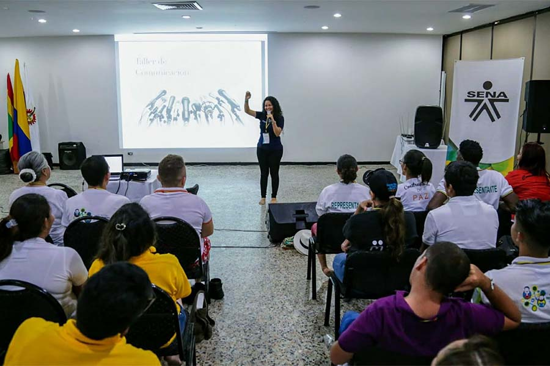

.png "Logo SENA")
El SENA, o Servicio Nacional de Aprendizaje, es una institución pública colombiana que se dedica a la formación profesional integral para trabajadores y empresarios, con el objetivo de impulsar el desarrollo social y económico del país. Ofrece programas de formación técnica y tecnológica en diversas áreas, buscando aumentar la productividad y competitividad de Colombia. El SENA también fomenta la innovación y el emprendimiento, contribuyendo a la generación de empleo y la superación de la pobreza.

El SENA fue creado en 1957 como resultado de un esfuerzo conjunto entre trabajadores, empresarios, la iglesia católica y la Organización Internacional del Trabajo. Desde entonces, ha evolucionado para adaptarse a las necesidades cambiantes del mercado laboral, incorporando nuevas tecnologías y metodologías de aprendizaje. La institución cuenta con 33 regionales a nivel nacional, y su visión es convertirse en un referente mundial en formación profesional integral y en la aplicación de tecnología e innovación.
El SENA se caracteriza por sus valores de respeto, honestidad, compromiso, diligencia, justicia, solidaridad y lealtad, que guían el comportamiento de su comunidad educativa y promueven la formación en el marco de la legalidad e integridad. La institución ofrece servicios de formación profesional, investigación, desarrollo tecnológico e innovación, y emplea la Agencia Pública de Empleo para conectar a los aprendices con oportunidades laborales.